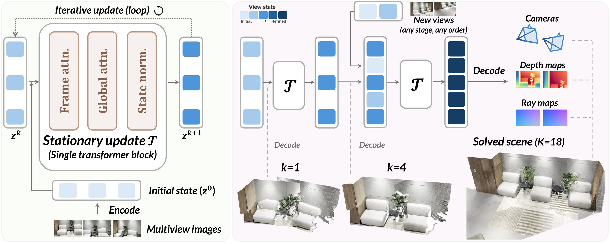

Keep solving, whatever arrives next
A geometric foundation model makes one prediction for a fixed set of photos. Solv3R keeps solving. The panels below play by themselves and show what this changes.
Any order, no matter.
One solver, whether views arrive all at once, in batches, or in any order.
We turn a looped Transformer into a multi-view solver
The same learned update, regardless of when views arrive or how far they have been refined. Decoding the states gives each view's camera and depth at any call. The update does not depend on the call index, so new views can join while the others are being solved.
The method figure of the paper

Keep solving. It stays solved.
Solv3R stays accurate beyond its training horizon and stops when its state stabilizes. DéjàView degrades beyond its fixed schedule.
ETH3D, DTU, ScanNet++ and Tanks and Temples windows, the protocol of the paper's stability analysis.
New photos also correct the old ones
New views join the ongoing solve and improve earlier camera estimates. DéjàView fails to jointly refine new and previously solved views.


New views can join at any call
New observations can improve earlier estimates, even after the initial solve has stabilized.
One frame out at every call (pipelining)
Because the update does not depend on the step, one call can refine frames at different stages. A video can then flow through a fixed window. Each call adds the newest frame and releases the oldest one, which has had its 16 calls. A step-conditioned solver keeps all frames at the same step, so it solves the window again for every new frame. Solv3R thus releases a frame at every call, 16× throughput at the same latency.
One cache for every call
With KV caching, solved views can stay fixed as reusable context. Layer-wise models need one cache per layer, and DéjàView one per step. Solv3R reuses the same cache at every call.